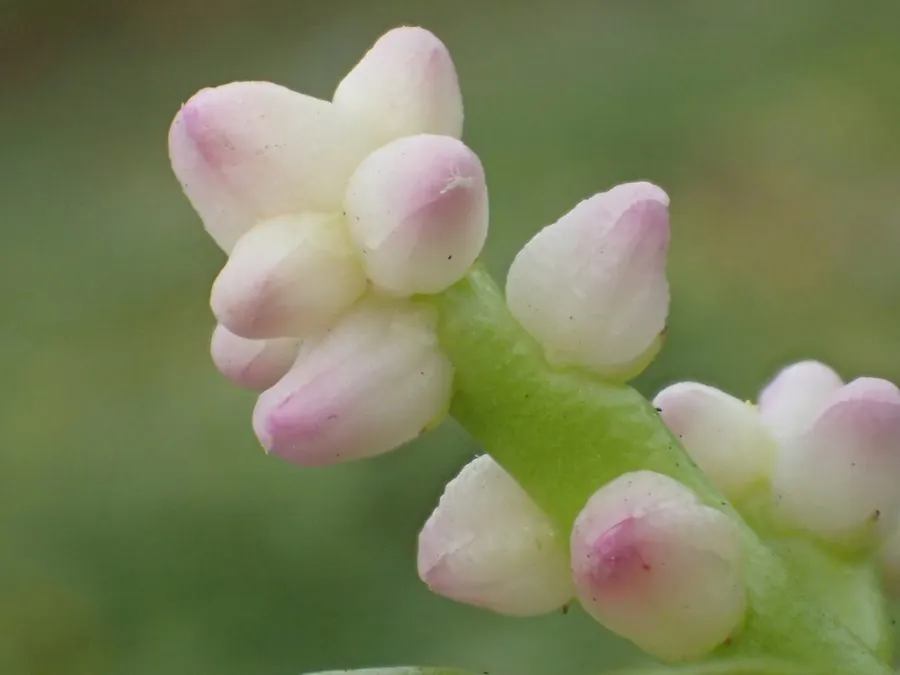

农作物与经济植物 · 植物界
木耳菜 Basella alba

木耳菜的叶片肥厚、口感滑嫩，因吃起来像木耳而得名，可炒食和煮汤，是南方常见的夏季蔬菜。
- 分类
- 门被子植物门纲双子叶植物纲目石竹目科落葵科属落葵属
- 栖息环境
- 温暖湿润的菜地与庭院，耐热不耐寒
- 地理分布
- 原产热带亚洲与非洲，现中国南方、东南亚等地栽培
- 保护级别
- 暂无评估（栽培作物）
物种志
木耳菜是落葵科一年生或二年生缠绕草本，茎肉质、光滑，可攀援 2–3 m，节上易生不定根。叶片互生，卵形或心形，肉质肥厚，深绿色，有光泽；叶柄短。花小，白或紫红色，穗状花序。果实为浆果，成熟时紫黑色，内含一粒种子。
木耳菜原产热带亚洲与非洲，中国南方栽培较为普遍。它喜温暖湿润、半阴环境，耐热、不耐寒，适宜在疏松肥沃、保水力强的土壤中种植，多搭架或任其攀爬。嫩茎叶可炒食、煮汤，口感滑嫩如木耳，因此得名；富含维生素、矿物质和黏液质。木耳菜生长快、采收期长，是南方夏季的重要绿叶蔬菜。栽培时注意保持土壤湿润，避免干旱。
形态与习性
- 茎肉质缠绕，可攀援 2–3 m
- 叶卵形或心形，肥厚有光泽
- 花小，白或紫红色
- 用途炒食、煮汤，口感滑嫩
- 特性耐热不耐寒
趣味知识
- 木耳菜吃起来口感滑嫩，像木耳，所以叫这个名字。
- 木耳菜是缠绕草本，茎可以攀援到 2–3 m 高。
- 它的果实成熟后是紫黑色的浆果。